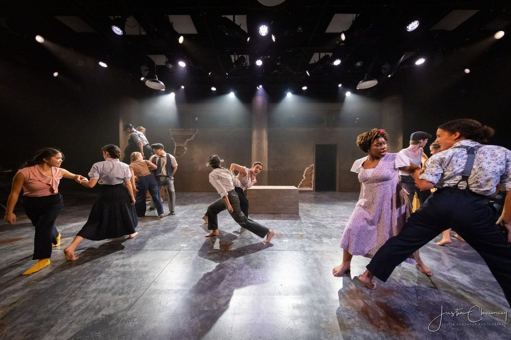
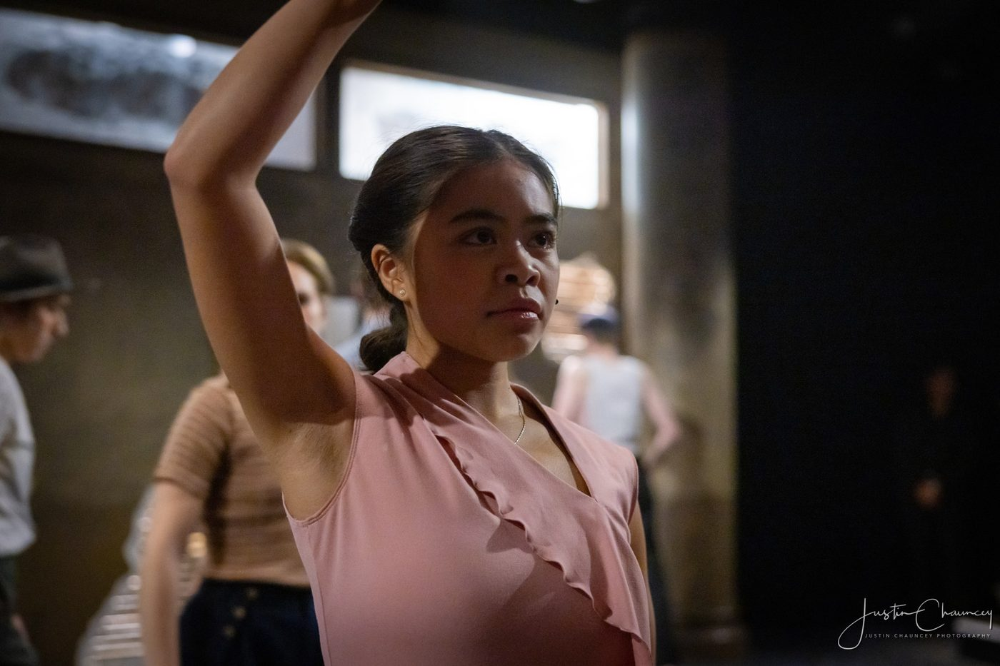

Waiting For Lefty
Overview
Clifford Odets’s Waiting For Lefty brings Depression-era unrest to life through searing vignettes of taxi drivers contemplating a strike. Filled with urgency and raw confrontation, the play pulses with social conscience.
In her role as Mae, Jennifer brought clarity and resolve to this character on the brink of economic breakdown. Her scenes — whether pleading for justice or defying authority — cut through the political fervor with grounded, heartfelt realism.
Jennifer’s Mae was a quiet force: determined, empathetic, and unwavering. Her delivery held the audience in the grip of both her character’s struggle and hope.
Categories
Theatre · Acting
Date
Mar 3, 2025
Client
NYU Tisch

